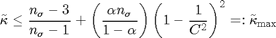
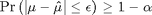

meanMC_g
Monte Carlo method to estimate the mean of a random variable to within a specific absolute error tolerance with guaranteed uncertainty within alpha.
Contents
Syntax
mu = meanMC_g(Yrand)
mu = meanMC_g(Yrand,abstol,alpha,n_sigma,fudge,timebudget,nbudget,npcmax)
mu = meanMC_g(Yrand,'abstol',abstol,'alpha',alpha,'fudge',fudge,'timebudget', timebudget,'nbudget',nbudget,'npcmax',npcmax)
mu = meanMC_g(Yrand,in_param)
[mu, out_param] = meanMC_g(Yrand,in_param)
Description
mu = meanMC_g(Yrand) estimates the mean of a random variable Y to within a specified absolute error tolerance 1e-2 with guaranteed uncertainty within 1%. Input Yrand is a function handle that accepts a positive integer input n and returns an n x 1 vector of IID instances of the random variable Y.
mu = meanMC_g(Yrand,abstol,alpha,n_sigma,fudge,timebudget,nbudget,npcmax) estimates the mean of a random variable Y to within an specified absolute error tolerance abstol with uncertainty within alpha using all parsing inputs n_sigma, fudge, timebudget,nbudget and npcmax.
mu = meanMC_g(Yrand,'abstol',abstol,'alpha',alpha,'fudge',fudge,'timebudget', timebudget,'nbudget',nbudget,'npcmax',npcmax) estimates the mean of a random variable Y to within a specified absolute error tolerance abstol with untertainty within alpha. All the field-value pairs are optional and can be supplied in different order.
mu = meanMC_g(Yrand,in_param) estimates the mean of a random variable Y to within a specified absolute error tolerence in_param.abstol with uncertainy within in_param.alpha. If a field is not specified, the default value is used.
[mu, out_param] = meanMC_g(Yrand,in_param) estimates the mean of a random variable Y to within a specified absolute error tolerence with the given parameters in_param and output parameters out_param.
Input Arguments
- Yrand --- the function for generating IID instances of a random variable Y whose mean we want to estimate. Y is often defined as a function of some random variable X with a simple distribution. For example, if Y = X.^2 where X is a standard uniform random variable, then one may define Yrand = @(n) rand(n,1).^2.
- mu --- the estimated mean of Y.
- in_param.abstol --- the absolute error tolerance, default value is 1e-2.
- in_param.alpha --- the uncertainty, default value is 1%.
- in_param.n_sigma --- initial sample size for estimating the sample variance, the default value is 1e3.
- in_param.fudge --- the standard deviation inflation factor, the default value is 1.1.
- in_param.timebudget --- the time budget to do the two-stage estimation, the default value is 100 seconds.
- in_param.nbudget --- the sample budget to do the two-stage estimation, the default value is 1e8.
- in_param.npcmax --- number of elements in an array of optimal size to calculate the mu, the default value is 1e6.
- in_param.checked --- the status that the paramtered are checked.
0 not checked
1 checked by cubMC
2 checked by meanMC
Output Arguments
- out_param.n_left_predict --- using the time left to predict the number of samples left.
- out_param.nmax --- the maximum sample budget to estimate mu, it comes from both the sample budget and the time budget.
- out_param.exit --- the state of program when exiting.
1 No enough samples to estimate the mean
2 Initial try out time costs more than 10% of time budget
3 The estimated time for estimating variance is bigger than
half of the time budget- out_param.kurtmax --- the upper bound on mondified kurtosis.
- out_param.time --- the time eclipsed.
- out_param.n_mu --- the sample needed to estimate the mu.
- out_param.n --- the total sample needed to do the two stage estimation.
Guarantee
Suppose the modified kurtosis, , of the random variable Y satisfies the inequality:

where is the number of sample used to estimate the variance of Y, C is the standard deviation inflation factor, and is the level of uncertainty. Then the answer is guaranteed to satisfies the inequality:

where is the absolute error tolerance.
Examples
Example 1: Calculate the mean of x^2 when x is uniformly distributed in [0,1], with the absolute error tolerance = 1e-2.
in_param.abstol=1e-2; in_param.alpha = 0.01; Yrand = @(n) rand(n,1).^2; mu = meanMC_g(Yrand,in_param)
mu = 3.3403e-01
Example 2: Using the same function as example 1, with the absolute error tolerance 1e-2.
mu = meanMC_g(Yrand,1e-2)
mu = 3.3952e-01
Example 3: Using the sample function as example 1, with the absolute error tolerance 1e-2 and uncertainty 0.01.
mu = meanMC_g(Yrand,'abstol',1e-3,'alpha',0.01)
mu = 3.3350e-01
See Also
Reference
[1] F. J. Hickernell, L. Jiang, Y. Liu, and A. B. Owen, Guaranteed conservative fixed width confidence intervals via Monte Carlo sampling, Monte Carlo and Quasi-Monte Carlo Methods 2012 (J. Dick, F. Y. Kuo, G. W. Peters, and I. H. Sloan, eds.), Springer-Verlag, Berlin, 2014, to appear, arXiv:1208.4318 [math.ST]